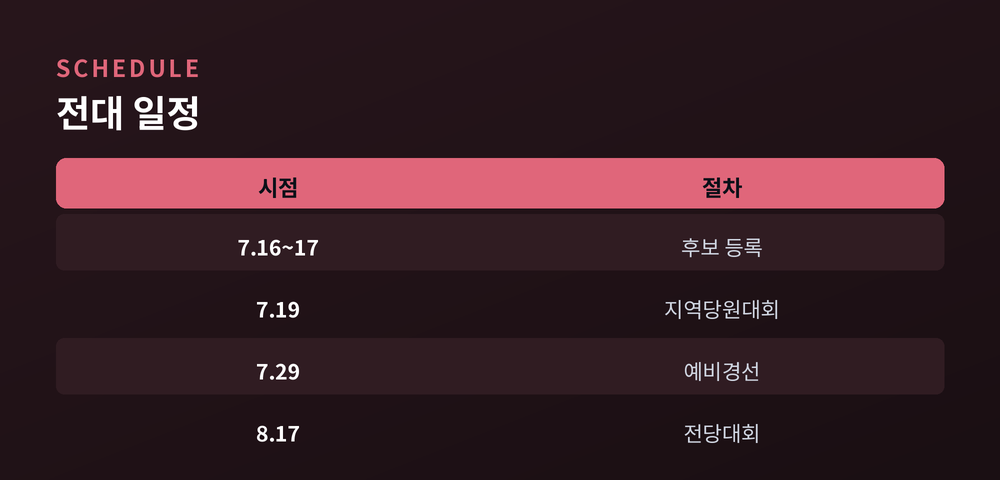
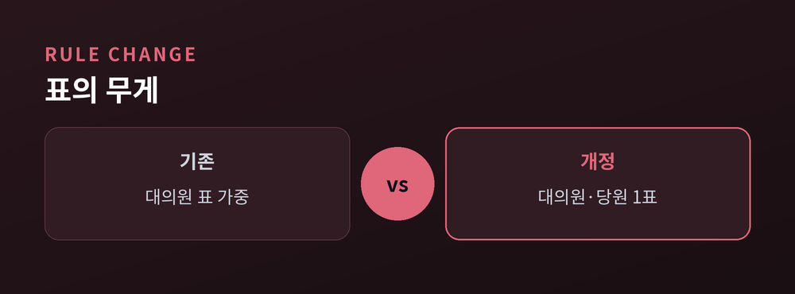
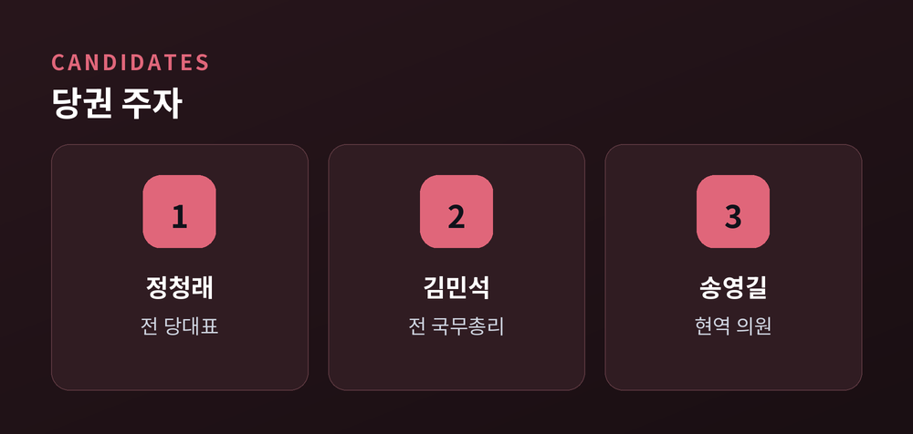
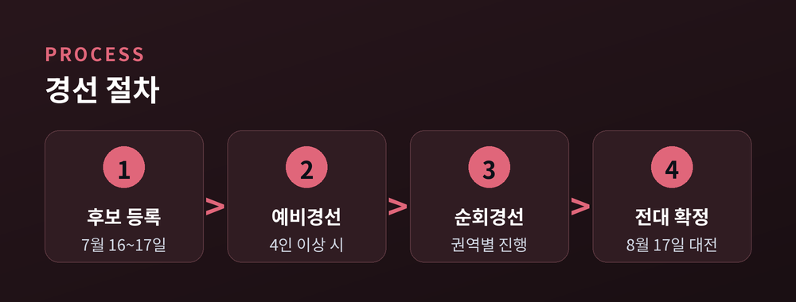

'1인 1표제' 첫 시험대, 당권 5파전이 열린다
더불어민주당의 새 지도부를 뽑는 전국당원대회가 8월 17일 대전에서 열립니다. 이재명 정부 출범 이후 처음 치러지는 정식 전당대회입니다. 이번에는 표의 셈법 자체가 바뀌었습니다. 대의원과 권리당원의 표 가치를 같게 맞추는 '1인 1표제'가 처음 적용되기 때문입니다.
민주당은 8월 17일 대전에서 당대표와 최고위원을 선출합니다. 여기서 뽑히는 대표는 2028년 4월로 예정된 제23대 총선 공천을 지휘하게 됩니다. 당권의 무게가 그만큼 큽니다.
일정은 촘촘합니다. 후보 등록은 7월 16~17일 이틀간 진행되며, 후보가 4명 이상이면 7월 29일 예비경선을 거칩니다. 본경선은 권역별 순회경선 방식으로 치러지는 것으로 알려졌습니다.

이번 전대의 핵심 변화는 표 가치의 재조정입니다. 종전에는 대의원 1표가 권리당원 여러 표에 해당하는 가중치를 가졌습니다. 지난해 8월 전대에서는 대의원 1표가 권리당원 약 17.5표로 환산됐다고 알려졌습니다.
바뀐 규정에서는 대의원과 권리당원이 똑같이 한 표씩을 행사합니다. 본선 반영 비율은 당원 투표 70%에 국민 여론조사 30%로 전해집니다. 앞서 진행된 당원 의견수렴 투표에서는 이 개정안에 80%를 웃도는 찬성이 나온 것으로 전해졌습니다.
"모든 당원이 한 표를 갖는 '당원주권'의 실험이 8·17 전대에서 처음 시험대에 오릅니다."

당권 구도는 5파전으로 좁혀지는 흐름입니다. 정청래 전 대표, 김민석 전 국무총리, 송영길 의원이 이른바 '3강'으로 거론되고, 여기에 고민정 의원과 김보미 전 강진군의회 의장이 이름을 올렸습니다. 정청래 전 대표는 7월 13일 출마를 선언했습니다.
쟁점은 노선입니다. 핵심 지지층 중심의 선명성을 앞세울지, 중도층까지 넓히는 확장 전략을 택할지를 두고 후보들의 메시지가 엇갈립니다. 유시민 작가가 제기한 '증축론' 논쟁도 당내로 번지고 있습니다. 특정 후보의 우열을 예단하기는 이릅니다.

1인 1표제를 둘러싼 우려도 있습니다. 권리당원의 상당수가 호남에 집중된 만큼, 당의 무게중심이 특정 지역으로 쏠릴 수 있다는 지적이 나옵니다. 반대로 당원의 뜻을 더 고르게 반영한다는 평가도 있습니다.
전당대회준비위원회는 첫 회의부터 '계파 갈등 차단'을 내걸었습니다. 친노·친문과 친명 진영의 세 대결로 번질 수 있다는 우려를 의식한 것으로 풀이됩니다. 새 대표가 이재명 정부와 어떤 당정 관계를 설정할지도 관전 포인트입니다.

정리하면, 8·17 전대는 새 지도부 선출을 넘어 '표의 규칙'을 바꾸는 자리입니다. 누가 대표가 되느냐만큼, 바뀐 규칙이 당의 무게중심을 어디로 옮길지가 관건입니다. 규칙이 바뀌면 전략도 바뀝니다. 남은 한 달, 후보들의 선택을 차분히 지켜볼 때입니다.
참고 소스